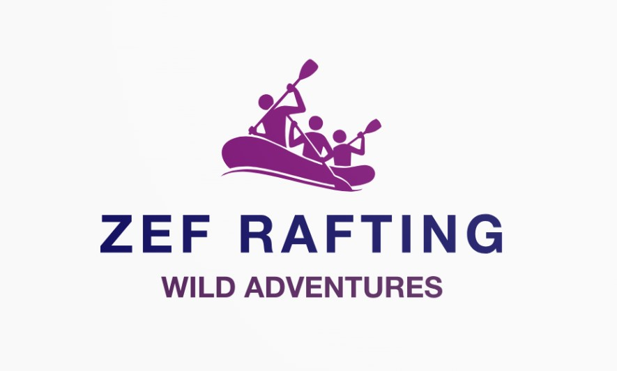

Overview
Purpose
For our rafting website, the underlying goal is clear: to establish a dynamic online presence that goes beyond a mere digital placeholder. As the proud owner of a thriving rafting business, I recognize the need to create a platform that not only captures the spirit of adventure but also serves as a hub for enthusiasts and potential clients alike. Build Community and Foster Adventure: Our primary purpose is to build a vibrant community of adventure enthusiasts, bridging the gap between the thrill-seekers and the untamed rivers awaiting exploration. The website aims to be more than a business showcase; it's a digital campfire where individuals can share their love for rafting, exchange stories of conquests, and inspire others to embark on their own aquatic journeys. Promote Safety and Knowledge: Beyond the adrenaline rush, our purpose extends to promoting safety and knowledge in water rafting. We aim to provide comprehensive information on safety measures, equipment guides, and skill-building resources. By sharing valuable insights and expertise, we empower both beginners and seasoned rafters to navigate the waters responsibly and confidently. Facilitate Seamless Planning: The website is a key tool in facilitating seamless trip planning. Whether it's a group outing, a solo adventure, or a family escapade, our purpose is to provide a user-friendly platform that guides visitors through the selection of destinations, trip packages, and essential details. Building revenues for our business is a natural outcome of offering valuable services and unforgettable experiences. Inspire and Educate: Our purpose goes beyond transactional interactions; it's about inspiring and educating. We seek to inspire a love for nature, adventure, and the unique thrill of conquering challenging river courses. Through engaging content, captivating stories, and expert advice, we aim to educate our audience, turning them into informed and passionate rafting enthusiasts.
Audience
Our water rafting website is specifically crafted for adventure enthusiasts and thrill-seekers seeking an exhilarating outdoor experience. The target customers are individuals aged 18 to 40, with a keen interest in outdoor activities and a moderate to high level of physical fitness. These individuals are likely to have a disposable income for recreational pursuits and are passionate about exploring nature. They are seeking an adrenaline-filled escape from their routine lives and are drawn to the excitement and challenges of water rafting. The website aims to provide comprehensive information on various water rafting destinations, safety guidelines, equipment recommendations, and trip packages tailored to different skill levels. Our audience expects to find detailed insights into the best rafting locations, reviews from experienced rafters, and tips for enhancing their rafting experience. Additionally, they may have questions about safety measures, skill-building opportunities, and recommendations for group or solo adventures. The website caters to the unmet needs of adventure enthusiasts by offering a one-stop platform for planning and organizing water rafting trips. Whether they are beginners looking for introductory experiences or seasoned rafters seeking new challenges, our site provides the necessary resources to meet their diverse needs. Recognizing that our audience is often on the go, the website is designed to be accessible across various devices, including desktops, laptops, and mobile devices, ensuring a seamless experience regardless of how they choose to access the content.
Branding
Website Logo
Style Guide
Color Palette
primary-color #2F2B6F
secondary-color #80237B
accent1-color #0F7173
accent2-color #AA8DB3
Palette URL: https://coolors.co/2f2b6f-80237b-0f7173-aa8db3-f2af29
Typography
Alumni Sans
https://fonts.google.com/share?selection.family=Alumni+Sans:wght@200
Headings Example Font
Normal Text/ Paragraph Example Font
Colored Callout Example Font
Navigation
Wireframes
Home Page Wireframe

About Us Page Wireframe